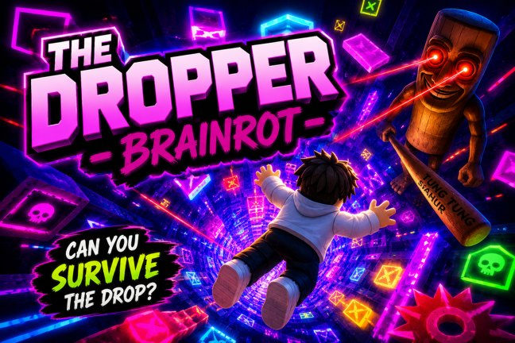
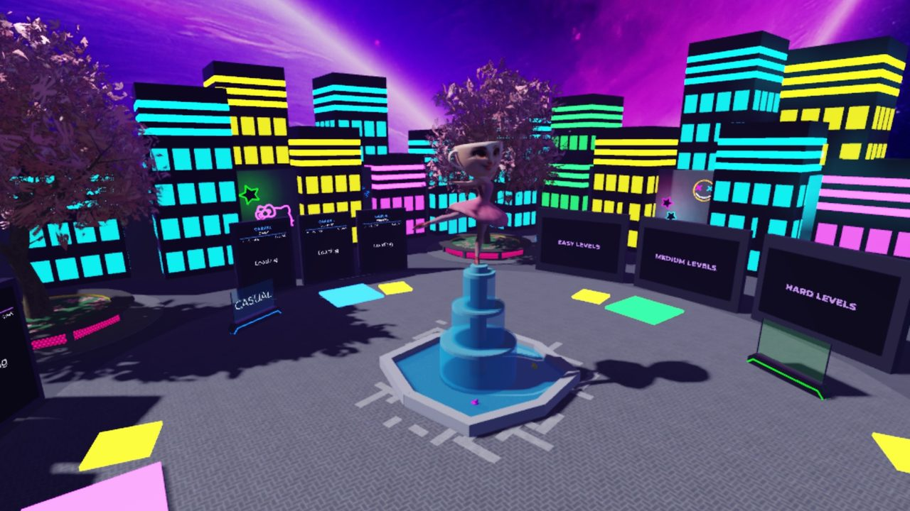
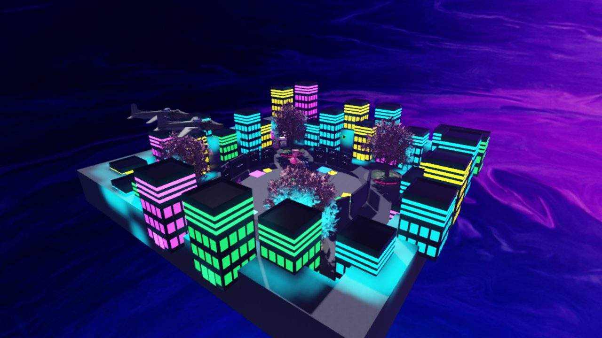
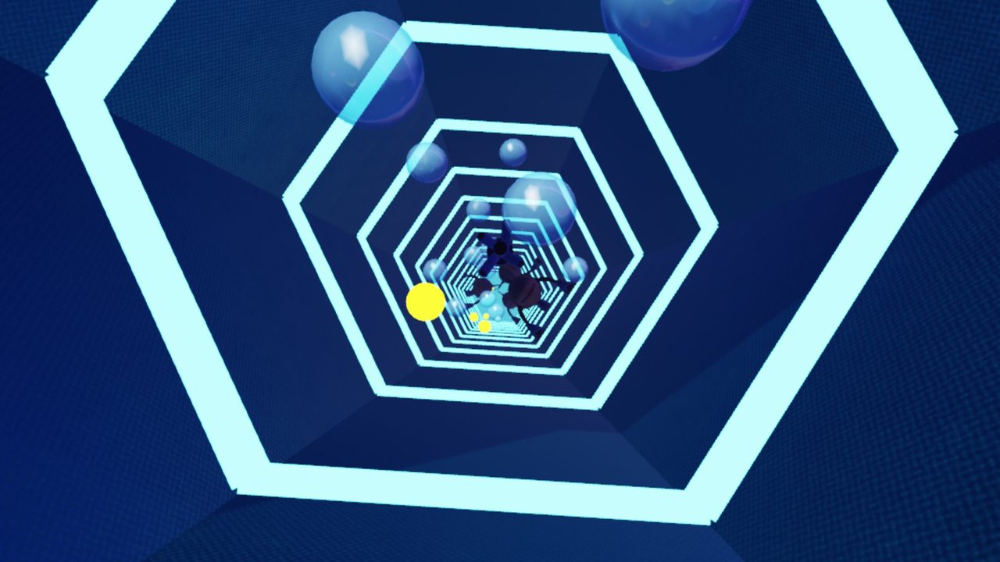

15 shafts, 3 difficulties
Each level is its own themed shaft kept in server storage and loaded into the world when a run starts, so the lobby stays light and a new level is one more model in the catalog.
Drop. Dodge. Don't die. Fall through neon shafts themed after brainrot memes, steer around everything in the way and see how deep you can get. Our Roblox game, live with real players.
A classic Roblox dropper: you jump into a shaft and fall. Steer with WASD or the arrows, dodge the obstacles on the way down and land in the water at the bottom. Every one of the fifteen shafts belongs to a brainrot character (Tung Tung Sahur, Ballerina Capuchina, Tralalero Tralala, Bombardino Crocodilo, Lirili Larila) in an Easy, Medium and Hard version, from a 430-stud drop to more than 1,300 studs of hard mode.
Pick a mode on the neon plaza: Casual to just fall, Training to practise one difficulty, or the Daily Speedrun, where everyone gets the same ten random levels for the day and races the clock. Two power-ups save a bad run: the Feather slows the fall right down, the Jetpack blasts you to the bottom.
Each level is its own themed shaft kept in server storage and loaded into the world when a run starts, so the lobby stays light and a new level is one more model in the catalog.
The date seeds the pick of ten random levels, so everyone races the same run that day, with timed runs, separate daily, weekly and all-time boards, plus Casual and Training modes.
Fall speeds for normal falling, the Feather and the Jetpack live in one shared module, read both by the client that makes the fall feel right and by the server's anti-cheat.
The server flags any run that reaches the water faster than the fastest legal fall, and keeps player data and coins in a DataStore across sessions.
An economy around the runs: coins, a shop with pets that follow you and trails that streak behind your fall, daily rewards and daily quests on pads around the plaza.
On-screen buttons for phones and tablets, and the whole interface in English and Polish, difficulty names included.



